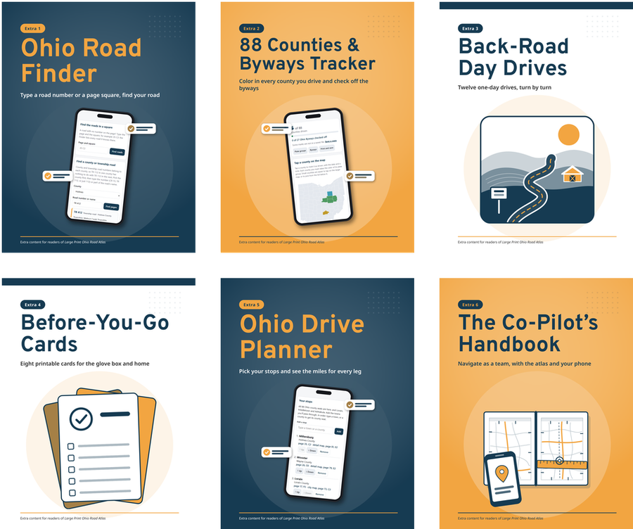

Reader bonus
Thank you for choosing this atlas
Six extras built from the atlas are waiting for you: three web apps for your phone or computer, a set of printable cards for the glove box and two printable guides.
Get my bonuses- Ohio Road FinderType any county or township road number and see the atlas page and square where it runs. Or type a page and square to list the roads there.
- 88 Counties & Byways TrackerColor in every Ohio county you've driven and check off the byways, with the date, and watch the count grow.
- Ohio Back-Road Day DrivesTwelve one-day drives on Ohio back roads, turn by turn, with the atlas pages to follow.
- Before-You-Go Cards for Ohio Back RoadsPrint them, keep them in the glove box, and leave one at home with your route.
- Ohio Drive PlannerPick your stops among all 88 county seats and see the miles for every leg, with the atlas page for each stop.
- The Co-Pilot’s HandbookHow to navigate as a team with the atlas and your phone, and find your spot on the page from your phone’s coordinates.